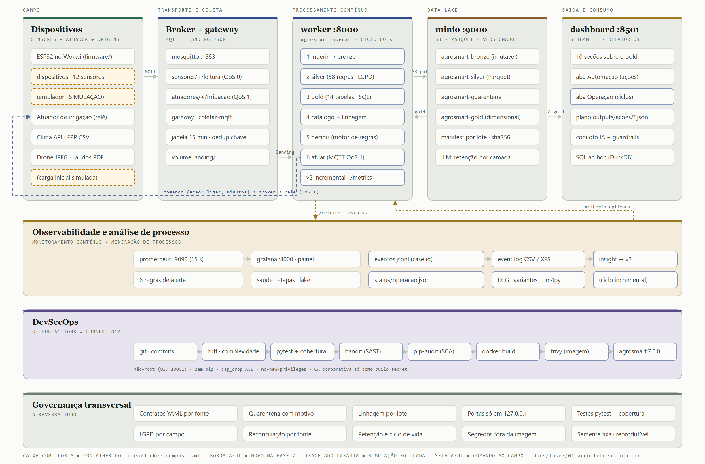

sensores publicam por MQTT a cada 5 s
contrato por fonte · 58 regras · quarentena com motivo · 99 %+ aprovado
regras agronômicas + copiloto de IA: lâmina e minutos por talhão
comando ao atuador (MQTT QoS 1) · nada age sem autorização
worker contínuo · alertas · painel · mineração de processos

arquitetura real · Fase 7